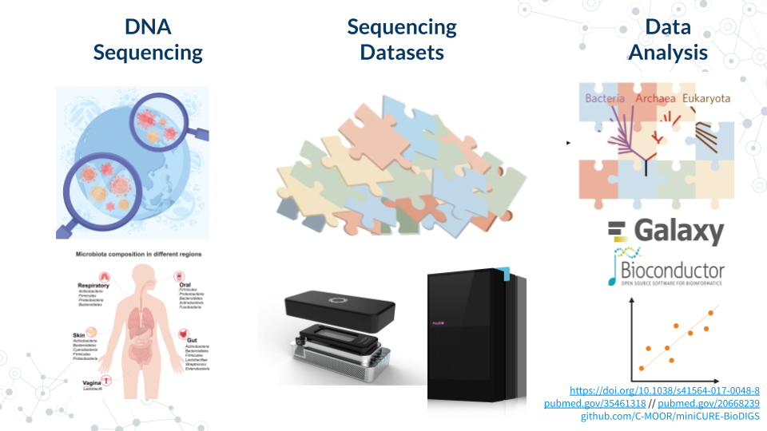
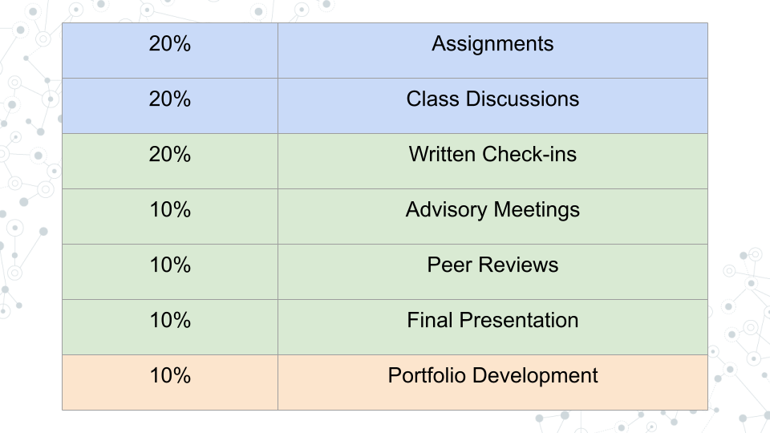

Instructor Guide
C-MOOR miniCURE content overview.
Course description
Microorganisms surround us, from the microbes in our soil to the bacteria in our digestive systems. As part of the C-MOOR project https://www.c-moor.org, this Course-based Undergraduate Research Experience (CURE) introduces computational tools using Galaxy https://usegalaxy.org and SciServer https://sciserver.org to analyze metagenomic datasets that you will use to conduct independent projects. Dig into soil metagenomics datasets generated by the GDSCN BioDIGS consortium http://biodigs.gdscn.org and study the soil biodiversity and ecological factors that impact human health and ecological concerns or explore publicly accessible human gut metagenomics datasets https://www.ncbi.nlm.nih.gov/bioproject and study how our microbiomes are shaped by our diet, medications, and genetics.

This course progresses through a series of in-person and online learning experiences that introduce important concepts and tools in data analysis and genomics, necessary to subsequently complete a Capstone Project.
Students work in groups and present frequently during class periods similar to research lab meetings in order to receive and provide community analysis and feedback.
This course is open to all students, regardless of major. No prior computational experience necessary.

Microbial Mysteries CURE was offered at the Johns Hopkins University in the Spring of 2025 as AS.020.126.01.SP25 Microbial Mysteries: Genomics from Ground to Gut.
Content overview
The CURE is organized in two phases (Figure 2) which parallel our two groups of Learning Goals: (1) Employ the Tools of Modern Biology, and (2) Think Like a Scientist. Additionally, a Professional Development module is integrated into the two phases.
In the first phase, five core labs teach students how to “Employ the Tools of Modern Biology”, through tutorials, exercises and group work. These tools provide a necessary foundation from which students can develop and investigate their own scientific questions.
In phase 2, students learn to “Think Like a Scientist” by developing their own scientific projects. Equipped with the tools they learned in phase 1, students work in groups to generate and pursue scientific questions based on their exploration of the metagenomics data, culminating in a poster presentation. To help students succeed, we provide check-ins and structured lab times for students to work on their projects over the remainder of the course (see Project Work for details). This phase is more flexible; students benefit from dedicated lab time to work on their projects, but these opportunities for project work can be integrated into labs with short protocols or long wait periods.
- Microbial Mysteries CURE was offered at the Johns Hopkins University over the Spring Semester of 2025 lasting a total of 13 weeks (2 classes/sessions per week).
- Each class/session lasted 1 hour and 15 minutes.
Course content was organized broadly into 3 categories:
1. Phase 1 Core Labs - on weekly basis, Units 0 through 4 [ weeks 1-5]
2. Phase 2: Project Work - over the course of 7-8 weeks [weeks 6-13]
3. Professional Development - over the course of 4 weeks integrated into Project WorkCore units 0, 1, 2, 3 and 4, are fundamental knowledge and skills units that were taught over the coure of 5 weeks.
Each core unit was typically associated with 1.5-2.5 hours of homework per class, or 3-5 hours of homework per week. The amount of homework is based on:
For each hour of class students were generally expected to spend approximately 2 hours of independent study time (homework).
To ensure meaningful coverage of important concepts and scientific content and computational skills necessary to proceed to next step and subsequently execute independent group project work.
Sample Schedules
Phase 1 - Core Labs
- Table below - shows a sample schedule for Spring 2025 semester at the Johns Hopkins University, where due date refers to assignment due date.
- Unit 0 - Introduction: Session 1 (Jan 21), Unit length (Jan 21 - Jan 22)
| Unit 0-1 | Type | Length | Spring 2025 |
|---|---|---|---|
| Lecture: Welcome to Your Genomics Adventure! | in-class | 20 min | Jan 21 |
| Create Accounts | Homework due | 30 min | Jan 21 |
| Lecture: The Scientific Process | in-class | 20 min | Jan 21 |
| Post Introductions | Homework next | 30 min | Jan 22 |
- Unit 1 - Scientific Literature: Session 1 (Jan 23), Session 2 (Jan 28), Unit length (Jan 23 - Jan 30)
| Unit 1-1 | Type | Length | Spring 2025 |
|---|---|---|---|
| Lecture: What’s in your XYZ? | in-class | 20 min | Jan 23 |
| Activity: Taxonomy Profiling Spreadsheet | Homework due | 45 min | Jan 23 |
| Galaxy Tutorial: A short introduction to Galaxy | Homework due | 40 min | Jan 23 |
| Pre-lab: Scientific Literature | Homework next | 45 min | Jan 27 |
| Unit 1-2 | Type | Length | Spring 2025 |
| Discussion: Scientific Literature | in-class | 30 min | Jan 27 |
| Lecture: Scientific Literature | in-class | 20 min | Jan 28 |
| Activity: Scientific Literature | Homework next | 80 min | Jan 29 |
- Unit 2 - Microbial Genomes: Session 1 (Jan 30), Session 2 (Feb 4), Unit length (Jan 30 - Feb 6)
| Unit 2-1 | Type | Length | Spring 2025 |
|---|---|---|---|
| Presentation Unit 1: Scientific Literature | in-class | 30 min | Jan 30 |
| Lecture: Microbial Genomes | in-class | 20 min | Jan 30 |
| Pre-lab: Microbial Genomes | Homework next | 90 min | Feb 3 |
| Galaxy Tutorial: QC & Galaxy Workflows | Homework next | 30 min | Feb 3 |
| Unit 2-2 | Type | Length | Spring 2025 |
| Discussion: Microbial Genomes | in-class | 30 min | Feb 4 |
| SciServer Tutorial: test-drive R | Homework due | 25 min | Feb 4 |
| Project: Microbial Genomes | Homework next | 90 min | Feb 5 |
- Unit 3 - Taxonomy Profiling: Session 1 (Feb 6), Session 2 (Feb 11), Unit length (Feb 6 - Feb 13)
| Unit 3-1 | Type | Length | Spring 2025 |
|---|---|---|---|
| Presentation - Unit 2: Microbial Genomes Project | in-class | 30 min | Feb 6 |
| Lecture: Taxonomy Profiling | in-class | 20 min | Feb 6 |
| Pre-lab: Taxonomy Profiling | Homework next | 100 min | Feb 10 |
| Activity: Possible Datasets | Homework next | 50 min | Feb 10 |
| Galaxy Tutorial: Using dataset collections | Homework next | 45 min | Feb 10 |
| Unit 3-2 | Type | Length | Spring 2025 |
| Discussion: Taxonomy Profiling | in-class | 30 min | Feb 11 |
| Lecture: Possible Datasets | in-class | 20 min | Feb 11 |
| SciServer Tutorial: Meet R! | Homework due | 25 min | Feb 11 |
| Project: Taxonomy Profiling | Homework next | 100 min | Feb 12 |
- Unit 4 - Finding AMRs: Session 1 (Feb 13), Session 2 (Feb 18), Unit length (Feb 13 - Feb 20)
| Unit 4-1 | Type | Length | Spring 2025 |
|---|---|---|---|
| Presentation - Unit 3: Taxonomy Profiling Project | in-class | 30 min | Feb 13 |
| Lecture: Finding AMRs | in-class | 20 min | Feb 13 |
| Pre-lab: Finding AMRs | Homework next | 90 min | Feb 17 |
| Lecture: Scientific Posters | in-class | 20 min | Feb 18 |
| Activity: Scientific Posters | Homework next | 50 min | Feb 17 |
| SciServer Tutorial: R for Data Science 1 | Homework | 50 min | Feb 17 |
| Unit 4-2 | Type | Length | Spring 2025 |
| Discussion: Finding AMRs | in-class | 30 min | Feb 18 |
| Project: Finding AMRs | Homework | 110 min | Feb 19 |
| SciServer Tutorial: R for Data Science 2 | Homework | 25 min | Feb 18 |
- Unit 5 - Kickstart Project Work: Session 1 (Feb 20), Sessison 2 (Feb 25), Unit length (Feb 20 - Feb 27)
| Unit 5-1 | Type | Length | Spring 2025 |
|---|---|---|---|
| Presentation - Unit 4: Finding AMRs Project | in-class | 30 min | Feb 20 |
| Lecture: Kickstart Project Work | in-class | 20 min | Feb 20 |
| Activity: Kickstart Project Work | Homework next | 90 min | Feb 26 |
Phase 2 - Project Work
Project work module is focused on research, and is mainly dedicated to group project work, with intervening Professional Development Sessions such as Scientific Talks. During their project work that spans ~8 weeks, students do research work towards their project, prepare and update relevant documents (e.g. Written Doc, poster slide deck) and separately meet with instructor to get help with project direction and execution and ask questions.
- Students are expected to work on their project independently and with groups a minimum of 4 hours per week.
- When there is no assignment due, students are still expected to work on their projects and update their posters.
- Project Work activities consist of In-Class Round Table activities, Written Updates, and Advisory Meetings.
Table: List of Project Work activities
| Project-related Activity | Format | Function |
|---|---|---|
| Round Table Data | in-class slidedeck | Discuss data and ask questions |
| Round Table Troubleshooting | in-class slidedeck | Discuss methods and ask questions |
| Written Check-ins (Doc) | Doc text updates | Share project work updates on project work |
| Written Check-ins (Poster) | Poster updates | Update poster |
| Advisory Meetings | In-person with instructor | Discuss progress and issues |
| Peer-review (Doc) | Doc text updates | Provide peer-feedback on project and poster |
Project Work In-Class Round Table
Over the course of the Project work, students present:
- 4-5 times Round Table Data (once per week):
- 4-5 times Round Table Troubleshooting (once per week)
- Project work was intermixed with professional development (PD) activities including Science Talks, Scientific Communication activity, and Next Steps activity.
Project Work Written Updates + Advisory Meetings
Over the course of the Project work, students submit:
- 4 Written progress Check-ins (once per week)
- 2 Poster update Check-ins
- 2 Peer-review write-ups
Project Work Schedule Overview
February 25 | Session 1
- Round Table Data (slidedeck)
February 27 | Session 2
- Round Table Troubleshooting (slidedeck)
March 4 | Session 3
- Round Table Data (slidedeck)
Homework: Work on Written Check-in #1 (Doc) (Due day before next class, March 5)
March 6 | Professional Development
- Science Talks: Guest Lecture and Q&A
Homework: Work on Written Check-in #2 (Doc) (Due day before next class, March 10)
March 11 | Session 4
- Round Table Troubleshooting (slidedeck)
Homework: Work on Written Check-in #3 (Poster) (Due day before next class, March 12)
March 13 | Session 5
- Round Table Data (slidedeck)
Advisory Meeting #1(Due next day, March 14)`
March 18
- Spring Break
March 20
- Spring Break
March 25 | Session 6
- Round Table Data (slidedeck)
March 27 | Sessison 7
- Round Table Troubleshooting (slidedeck)
Homework: Work on Written Check-in #4 (Doc) (Due day before next class, March 31)
April 1 | Session 8
- Round Table Data (slidedeck)
Homework: Work on Peer-review #1 (Doc) (Due day before next class, April 2)
April 3 | Session 9
- Round Table Troubleshooting (slidedeck)
Advisory Meeting #1(Due next day, April 4)`Homework: Work on Written Check-in #5 (Doc) (Due day before next class, April 7)
April 8 | Professional Development
- Round Table Poster Review (slidedeck)
Homework: Work on Peer-review #2 (Doc) (Due day before next class, April 9)
April 10 | Session 10
- Round Table Poster Review (slidedeck)
April 15 | Session 11
- Science Talks: Guest Lecture and Q&A
April 17 | Professional Development
- Round Table Poster Review (slidedeck)
- Finalize Poster for printing
- In class activity: Scientific Communication
April 22 | Professional Development
- Project Work Final Poster Presentation
April 24 | Wrap-Up: Professional Development
- Last Session
- Lecture: Next Steps
- In class activity: Next Steps
0.0.0.1 Project Work Grading
| Project work activity | Format | points | |
|---|---|---|---|
| Written Check-ins | Doc | each 50 pts | |
| Advisory Meetings | In-person | each 50 pts | |
| Peer-reviews | Doc | each 50 pts | |
| Final Poster Presentation | 100 pts |
0.0.0.2 Project Work Organizer
Use this organizer to find instructions and track documents.
- For setting up meeting times, we recommend using when2meet
| Group | Check-in | Poster | Meeting #1 | Meeting # 2 |
|---|---|---|---|---|
| Group A | Doc | Slides | Date 1 | Date 2 |
| Group B | Doc | Slides | Date 1 | Date 2 |
| Group C | Doc | Slides | Date 1 | Date 2 |
| Group D | Doc | Slides | Date 1 | Date 2 |
Professional Development
- Weeks 9-13
| Module: Project Work | Type |
|---|---|
| Activity: Science Talks | Homework |
| Science Talks | Guest Lecture |
| Activity: Science Talks | Homework |
| Science Talks | Guest Lecture |
| Activity: Scientific Communication | Homework |
| Activity: Next Steps | Homework |
What to know
As an instructor,
- What do I have to know to teach this course?
- What level do I need to be at?
- I am not a genomics expert, can I do it?
- I don’t know coding, can I do it?
Where to get help
As an instructor, where can I get help in teaching this course?
- Ask C-MOOR community for help [https://help.c-moor.org]